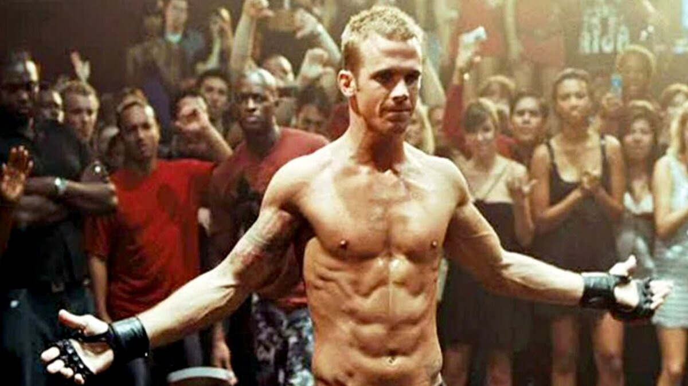
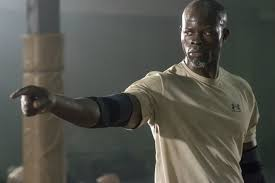
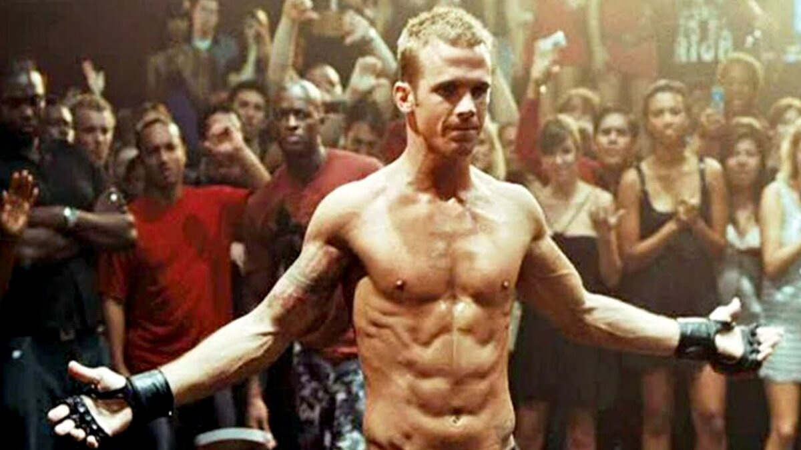
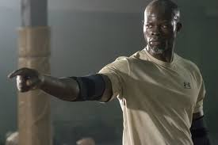

Краткое содержание фильма
История молодого парня, который через боль и потерю находит свой путь в мир смешанных единоборств. Он учится не только физическим, но и жизненным боям, преодолевая собственные страхи и слабости.
 



| Год | 2008 |
| Страна | США |
| Жанр | Драма, спорт, боевик |
| Режиссер | Джефф Уодлоу |
Краткое содержание фильма
История жизни и карьеры легендарного советского хоккеиста Валерия Харламова, который внес огромный вклад в развитие хоккея и прославился благодаря своему мастерству на льду.
| Год | 2013 |
| Страна | Россия |
| Жанр | Драма, спорт |
| Режиссер | Николай Лебедев |
Краткое содержание фильма
Группа исследователей отправляется в путешествие через кротовую нору, чтобы найти новую планету, пригодную для жизни человечества. Фильм затрагивает сложные темы времени, пространства и человеческих отношений.
| Год | 2014 |
| Страна | США, Великобритания |
| Жанр | Фантастика, драма, приключения |
| Режиссер | Кристофер Нолан |